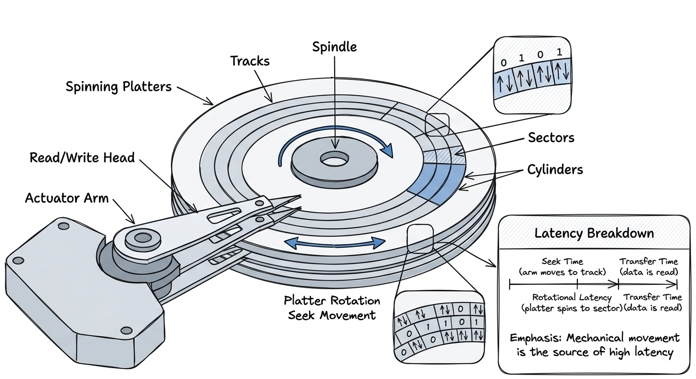
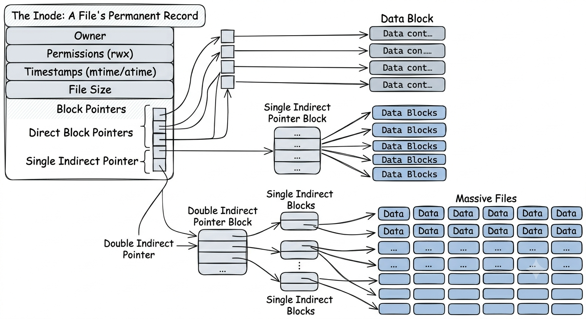
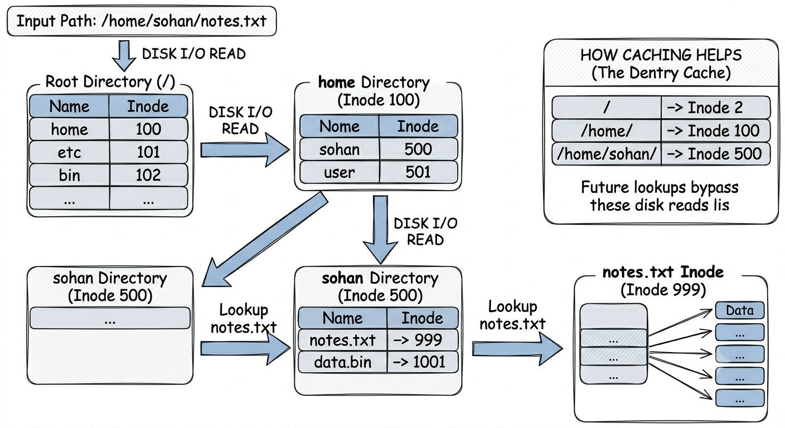
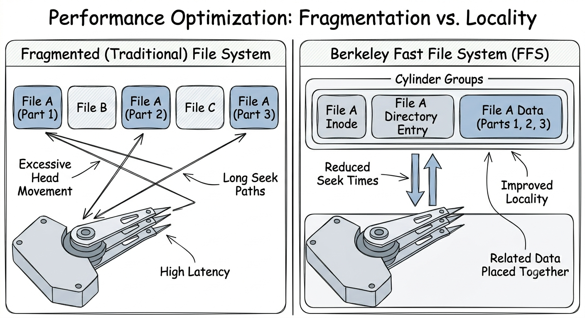
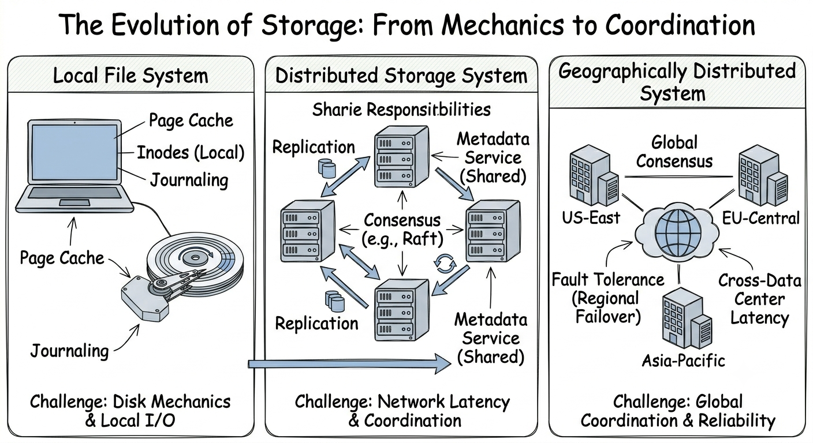

In my last blog, we explored how the OS pulls off a neat magic trick: giving every process the illusion of its own infinite, private memory. Pages load on demand, get swapped out when RAM gets tight, and everything hums along beautifully. But we quietly treated one crucial piece as a black box: the disk. When a page got evicted, we just said it went "to disk." When a file opened, the OS "read from disk." Today, we're cracking that box open.
Understanding storage means getting a grip on the physical hardware first, and then the software that tries to tame it. Let's start at the absolute bottom.
How a Hard Drive Actually Stores a Bit
A classic spinning hard drive is basically a hyper-fast, incredibly precise record player. The platters, flat circular disks coated in a magnetic film, spin at thousands of revolutions per minute. A read/write head floats just nanometers above the surface. To give you an idea of how tight that tolerance is, a single human hair passing through would cause a catastrophic crash.
The surface of these platters is divided into microscopic magnetic domains. Each one can be polarized in one of two directions to represent a 1 or a 0. Writing a bit means shooting a tiny current through the head to flip the domain underneath. Reading it back means sensing the magnetic field as the platter whizzes by.
These domains are grouped into sectors (usually 4,096 bytes on modern drives), which are arranged into concentric rings called tracks. Stack those tracks vertically across multiple platters, and you get a cylinder. This physical geometry is a big deal because the drive's arm has to physically swing to reach different tracks, and moving physical metal takes real, agonizing time in computer terms.
Reading data from a hard drive is a waiting game with three parts. First is seek time: waiting for the arm to swing to the right track (usually 3 to 10 milliseconds). Second is rotational latency: waiting for the right sector to spin under the head (about 4 milliseconds at 7,200 RPM). Finally, there is the transfer time, which is the actual fast part where bytes are read. Every single random jump on a spinning disk pays those heavy seek and rotational taxes upfront.
Let's put that in perspective. A random 4KB read takes roughly 10 milliseconds. In that exact same window of time, a modern CPU can execute about 30 million instructions. So, every random disk read is a 30-million-cycle traffic jam where your CPU is just sitting there twiddling its thumbs. That is not a minor bottleneck; that physical constraint dictates almost every file system design decision.
Solid State Drives (SSDs) swap the physics, but the core tension remains. Instead of spinning platters, they trap electrons in NAND flash cells to store data. Because there are no moving parts, that torturous seek time drops from milliseconds to microseconds. But they have their own quirks: cells wear out over time, you can only erase data in large "blocks" rather than individual bytes, and writing takes longer than reading. The physics changed, but the ultimate goal is the same: tricking slow hardware into feeling fast for the software above it.

Figure 1. HDD internals showing platters, sectors, tracks, cylinders, and the sources of disk latency.
The Disk as a Flat Array
Thankfully, the operating system does not actually have to micromanage tracks, heads, and cylinders. The drive's internal firmware handles the messy physics and offers the OS a delightfully simple interface: a giant, linear list of fixed-size blocks, numbered 0 to N-1. Want the data at block 1,472? Just ask for block 1,472, and the drive quietly figures out exactly where that lives on the physical metal.
Everything you think of as a file system, your folders, file names, permissions, and nested directories, are just a clever data structure built on top of this massive array of blocks. The disk itself knows absolutely nothing about your vacation photos; it just reads and writes blocks on demand.
The Inode: A File's Permanent Record
Every file needs a place to keep its stats: how big it is, who owns it, when you last tweaked it, and crucially, which blocks on the disk actually hold its data. That ID card is called the inode (index node).
Interestingly, an inode holds all this metadata, but it does not hold the file's name. That is actually on purpose. Names live inside directories, not the files themselves, which is why you can have multiple file names pointing to the same file data.
For tiny files, the inode just points directly to the data: "Hey, my contents are in blocks 84, 85, and 86." Simple. But what if you have a massive 4K video file? A fixed-size inode cannot hold millions of block numbers. So, file systems use a trick called indirection.
The inode can point to an indirect block, which is a block whose only job is to hold pointers to other data blocks. If you need more space, you use a doubly indirect block (a block pointing to blocks of pointers) or even a third level. Small files stay fast and simple, while massive files just cost a couple of extra hops to find their data. It is an incredibly elegant way to handle anything from a 10-byte text file to a multi-terabyte database without changing the underlying structure.

Figure 2. An inode stores metadata and pointers to data blocks, scaling through indirect addressing.
Finding a File: The Cost of a Path Lookup
Under the hood, a directory is just a file that contains a list of names and their matching inode numbers. So when you double-click /home/sohan/notes.txt, the OS cannot just teleport there. It has to ask for directions at every step, and each step costs time.
It starts at the root (/), grabs that inode, reads the root directory blocks, searches for home, gets that inode number, reads those blocks, looks for sohan, and repeats the process until it finally finds the inode for notes.txt. Only then can it actually read your notes.
If you count that up, opening a file with a three-folder path on a cold boot might take eight to ten separate disk reads before a single byte of your actual file shows up. On a spinning disk, that is nearly 100 milliseconds just to say "hello" to a file. Multiply that by the hundreds of files an app loads when it launches, and you would be waiting all day.
To save us from this nightmare, the kernel keeps a cache of these lookups in RAM (the dcache and inode cache). Once a path is resolved, the OS remembers it. A "warm" cache turns those painfully slow disk reads into lightning-fast memory lookups, bridging the gap between milliseconds and microseconds.

Figure 3. Resolving a file path requires traversing directories and inode lookups step by step.
Free Space and the Fragmentation Problem
How does the computer know where to put new data? It keeps a free space bitmap: a large list of 1s and 0s where 0 means "empty" and 1 means "taken." Finding space just means hunting for the next 0 and flipping it.
But over months of creating, editing, and deleting files, things get messy. A file that seems like one solid chunk to you might actually be scattered across dozens of random gaps all over the disk. New files just cram themselves into whatever holes are left behind by deleted ones.
This is fragmentation. On an SSD, it is mostly harmless since there is no physical read head to move. But on a spinning hard drive, it is brutal. Instead of smoothly reading a file in one continuous swoop, the drive head is frantically jumping all over the platters, paying that heavy seek-time tax over and over again. A 20-millisecond read suddenly balloons into 200 milliseconds.
Fragmentation happens in two forms. External fragmentation is when you have plenty of free space, but it is chopped up into uselessly small pieces (like trying to park a bus in a lot full of half-car spaces). Internal fragmentation is wasted space inside a block. If your system uses 4KB blocks and you save a 1KB file, you have permanently wasted 3KB of space that nothing else can use.
The earliest UNIX file systems did not account for this at all, and it showed. A fresh disk was incredibly fast, but after a few months of normal use, performance would plummet to 20% of its original speed. The drive was not dying; it was just hopelessly disorganized.
FFS: Taking the Disk's Physics Seriously
In 1984, engineers at Berkeley released the Fast File System (FFS), which revolutionized storage. They realized that treating a mechanical disk like a magical, uniform array was a poor approach. FFS decided to respect the physics.
Their big idea was the cylinder group. FFS divided the disk into chunks of physically adjacent tracks. When you created a new file, FFS tried its hardest to place the file's data, its inode, and its parent directory all in the same cylinder group.
The logic is elegant: if you open one file in a folder, you are probably going to open others (like photos in an album or source code in a project). Grouping them physically meant the drive's read head barely had to move to jump between them. A cross-disk leap that used to take 8 milliseconds suddenly took less than 1.
FFS also increased the block sizes (to 4KB or 8KB) to read data in bigger, more efficient chunks. To prevent large amounts of internal fragmentation for tiny files, they introduced "fragments" that could split a block for the leftover tail ends of files.
The result? FFS was almost ten times faster than the original UNIX file system on the exact same hardware. The physical disk did not magically get better; the software just stopped fighting the hardware.

Figure 4. FFS improves performance by keeping related directories, inodes, and data physically close together.
FFS gave us a lot of modern conveniences: long file names, symbolic links, and atomic renames. But its real legacy was a mindset shift. File system speed is not just about finding an empty slot; it is a strategic placement problem. The question changed from "where can I put this?" to "where should I put this so it is fast to read later?"
Crash Consistency: The Problem of Multiple Writes
Writing a file is not a single action. You have to write the data, update the inode, and update the free space bitmap. If someone trips over the server's power cord right between step two and three, your disk is left in a corrupted, half-finished state.
The traditional fix was fsck (file system check). Every time a computer rebooted after a crash, it would painstakingly cross-reference every single inode and bitmap on the entire disk to repair the damage. On a small drive in the 1980s, that took seconds. On a modern multi-terabyte server, it can take hours. No one wants their database offline for hours just to run a disk scan.
Journaling solved this by borrowing an idea from databases. Before making any actual changes, the file system writes a brief "to-do list" (the journal) of what it is about to do. Once that note is safely saved, it makes the real updates. If the power cuts out, the system just checks the journal on reboot and finishes whatever was left incomplete. The system is back online in seconds.
The Page Cache: Where Memory and Storage Meet Again
If your computer actually went to the hard drive every single time a program called read(), it would feel agonizingly slow. To fix this, the kernel uses the page cache: a portion of your fast RAM dedicated to holding recently accessed files. If you ask for a file and it is already in the page cache, the OS hands it to you from memory. The disk does not even wake up.
Writes work similarly. When you save a document, the OS writes it to the RAM cache, signals that it is saved, and lets your program keep running immediately. A background thread quietly flushes that data to the actual disk later. That is why saving feels instantaneous. If an app really needs to guarantee that data is on disk before moving on, it uses a command called fsync() to force the flush.
This cache shares the same physical RAM as the virtual memory system. When your computer runs low on memory, it simply evicts the oldest, unmodified files from the cache. This same system is what powers mmap(), letting programs map files directly into memory as though they were standard arrays, without ever explicitly calling a read command.
Locality in Access Patterns
The genius of FFS relies on a universal truth in computing: programs are creatures of habit. If you read one byte of a file, you will probably read the next byte a microsecond later. If you open one file in a folder, you will likely open its neighbors.
We call this locality. Spatial locality means that if you touch one piece of data, you will probably touch the data sitting next to it. Temporal locality means that if you touch it once, you will probably touch it again soon. Caches rely entirely on this predictability. If computer usage were completely random, caching would be useless.
File systems use spatial locality to group related blocks. The page cache uses temporal locality to keep frequently accessed files in RAM. The OS also gets proactive: if you read block 1, it guesses you will want blocks 2, 3, and 4, and silently fetches them into RAM ahead of time. When it guesses correctly (which is almost always), those next reads feel instant.
Ignoring these patterns is a death sentence for performance. A program that accesses data randomly across a disk can run a hundred times slower than one that reads sequentially, even on the exact same hardware. The hardware has not changed; the behavior has.
When the Machine is Not Alone
Everything we have covered so far makes a large assumption: that there is only one computer, and it is completely in charge of its one disk. On a single machine, if something breaks, the damage is localized. The OS is the sole authority, resolving conflicts and enforcing the rules.
Now imagine splitting that file system across a hundred servers in three different data centers. Suddenly, no single computer knows the whole truth. Thousands of users are trying to edit files at the exact same time. A network cable gets cut, and two servers both think they are in charge, quietly accepting conflicting edits. When the network comes back, you have to somehow merge that chaos. There is no master journal anymore. There is not even a universal clock.
Every neat abstraction we built for a local disk breaks down and has to be completely re-engineered. A simple journal turns into complex consensus protocols like Paxos or Raft. The humble inode becomes a massive distributed metadata service. Keeping a system consistent across a network is incredibly hard.

Figure 5. As storage scales from a single machine to distributed systems, consistency and coordination become the primary challenges.
At the end of the day, a file system is just a machine for solving consistency problems. When it is just one hard drive, failures are predictable and communication is instant. But when you scale it up to the cloud, the physical bottleneck shifts from the swing of a magnetic read head to the literal speed of light between data centers, and unlike a spinning disk, no amount of money can engineer the speed of light away.
Which brings us to a natural question: if a file system is already doing so much work to keep data consistent and fast, why do we need databases at all? Why not just write your data to files and call it a day? It turns out that databases are not a replacement for the file system; they are built on top of it, and they solve an entirely different class of problems. In the next post, we will dig into exactly what those problems are, how databases are structured on disk, and why something as seemingly simple as "find me all users named Alice" requires a surprising amount of engineering to do quickly.